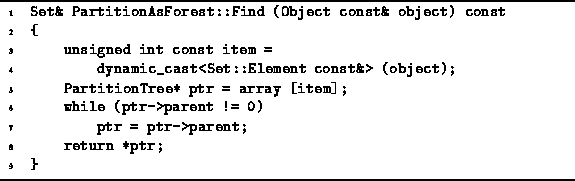
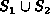
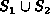
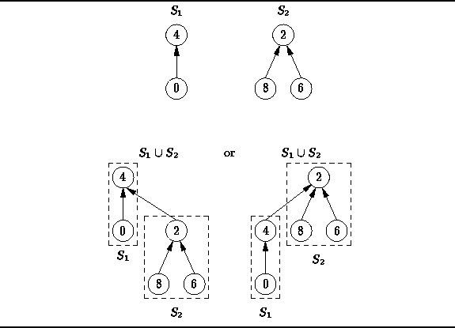
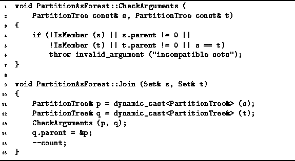

Data Structures and Algorithms
with Object-Oriented Design Patterns in C++
Data Structures and Algorithms
with Object-Oriented Design Patterns in C++Two elements of the universe are in the same part of the partition if and only if they share the same root node. Since every tree has a unique root, it makes sense to use the root node as the ``handle'' for that tree. Therefore, the find operation takes an element of the universal set and returns the root node of the tree that contains that element. And because of way in which the trees are represented, we can follow the chain of parent pointers to find the root node.
Program  gives the code for the Find
member function of the PartitionAsForest class.
The Find function takes as its lone argument
a reference to an Object instance
and returns a reference to a Set.
The argument is expected to be actually a Set::Element
that specifies the item of the universe that is the object of the search.
gives the code for the Find
member function of the PartitionAsForest class.
The Find function takes as its lone argument
a reference to an Object instance
and returns a reference to a Set.
The argument is expected to be actually a Set::Element
that specifies the item of the universe that is the object of the search.

Program: PartitionAsForest Class Find Member Function Definition
The Find operation begins at the node array[item] and follows the chain of parent pointers to find the root node of the tree that contains the specified item. The result of the function is a reference to the root node.
The running time of the Find operation is O(d) where d is the depth in the tree of the node from which the search begins. If we don't do anything special to prevent it, the worst case running time is O(N), where N is the size of the universe. The best performance is achieved when every non-root node points to the root node. In this case, the running time is O(1).
Another advantage of having a pointer to the parent in each node
is that the join operation can be implemented easily and efficiently.
For example, suppose we wish to join
the two sets  and
and  shown in Figure .
While there are many possible representations for ,
it turns out that there are two simple alternatives which can be
obtained in constant time.
These are shown in Figure .
In the first alternative,
the root of
shown in Figure .
While there are many possible representations for ,
it turns out that there are two simple alternatives which can be
obtained in constant time.
These are shown in Figure .
In the first alternative,
the root of  is made a child of the root of
is made a child of the root of  .
This can be done in constant time simply by making the parent pointer
of the root of
.
This can be done in constant time simply by making the parent pointer
of the root of  point to the root of
point to the root of  .
The second alternative is essentially the same as the first
except that the rôles of
.
The second alternative is essentially the same as the first
except that the rôles of  and
and  are exchanged.
are exchanged.

Figure: Alternatives for Joining Elements of a Partition
Program gives the simplest possible implementation
for the Join operation.
The Join member function of the PartitionAsForest class
takes two arguments--both of the references to Sets.
Both arguments are required to be references to distinct
PartitionTree instances which are contained in the given partition.
Furthermore, both of them are required to be root nodes.
Therefore, the sets that the arguments represent are disjoint.
The member function CheckArguments makes sure that the arguments
satisfy these conditions.
The Join operation is trivial and executes in constant time: It simply makes one node the parent of the other. In this case, we have arbitrarily chosen that the node specified by the first argument shall always become the parent.

Program: PartitionAsForest Class Simple Join Member Function Definition
 Copyright © 1997 by Bruno R. Preiss, P.Eng. All rights reserved.
Copyright © 1997 by Bruno R. Preiss, P.Eng. All rights reserved.